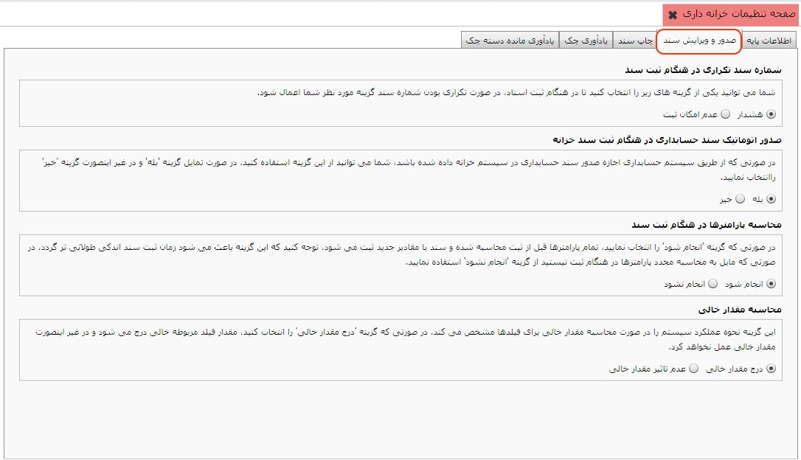
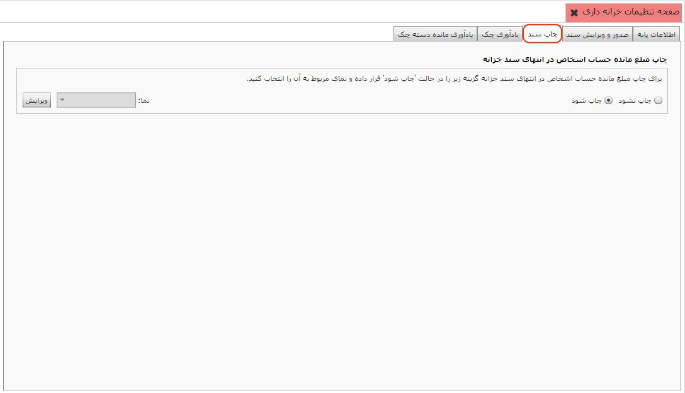
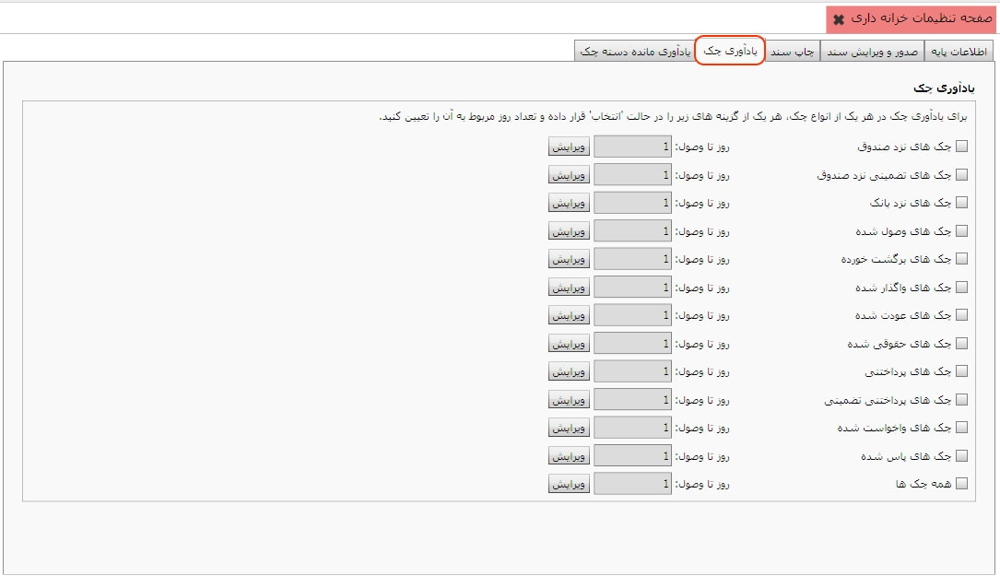

با کلیک بر روی"صفحه تنظیمات خزانه داری" صفحه زیر ظاهر می شود:

همانطور که مشاهده می کنید این صفحه دارای پنج تب «اطلاعات پایه»، «صدور و ویرایش سند»، «چاپ سند»، «یاد آوری چک» و «یاد آوری مانده دسته چک» می باشد که با انتخاب هرکدام صفحه مربوط به آن نمایش داده می شود، در شکل بالا تب«اطلاعات پایه» انتخاب شده است.
با
استفاده از این ابزار شما می توانید عملیات ها و عواملی که قبلا ایجاد و در فایل
xml ذخیره شده و به صورت
آماده در نرم افزار قرار داده شده است را باز خوانی کنید. با انتخاب گزینه
 پنجره زیر نمایان می شود:
پنجره زیر نمایان می شود:
لیست عملیات و عوامل خزانه در قالب فایل عملیات عمومی خزانه در نرم افزار ذخیره شده است. با انتخاب فایل مذکور و زدن گزینه Open عملیات خزانه را بازخوانی نمایید.
همچنین می توانید با استفاده از گزینه
 عملیات ها و عواملی را که
ایجاد کرده اید یا تغییراتی که در فایل آماده انجام داده اید را در فایلی به فرمت
xml ذخیره کنید.
عملیات ها و عواملی را که
ایجاد کرده اید یا تغییراتی که در فایل آماده انجام داده اید را در فایلی به فرمت
xml ذخیره کنید.
که در این پنجره شما می توانید نام فایل و نوع آن و مسیر ذخیره فایل را مشخص کنید و سپس با انتخاب گزینه Save اطلاعات را ذخیره کنید.
برای هر یک از موارد موجود در این صفحه توضیحات لازم داده شده است، با مطالعه هر یک می توانید تنظیمات دلخواه و متناسب با هر بخش را تغییر دهید.
این صفحه نظر شما را در مورد چاپ مانده بدهی اشخاص در انتهای سند خزانه سوال می کند.
می توانید در قسمت نما - که در سیستم حسابداری تعریف می شود- مانده بدهی، بستانکاری، حقوق پرداختنی و یا ترکیبی از مانده کلیه حساب های شخص را انتخاب کنید و در انتهای سند خزانه حساب شخص مورد نظر را بر اساس نمای انتخاب شده مشاهده نمایید.

در این تب می توانید برای تاریخ سر رسید انواع چک یاد آوری تنظیم نمایید :
در این تب می توانید یاد آوری باقی مانده دسته چک را تنظیم نمایید :